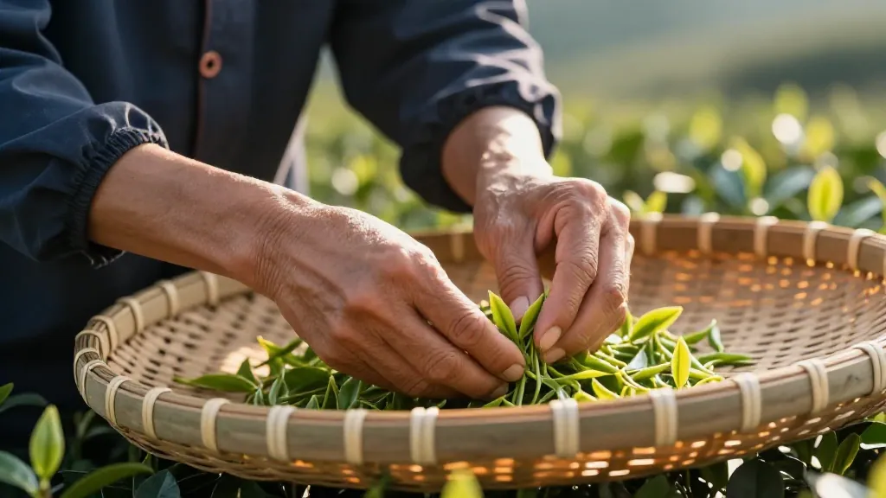

🍵 凤凰山刚下过一场阵雨，远处的乌岽顶还藏在云雾里，像一块没揭盖的茶巾。
"这个阿玲，在深圳当了十年投行精英，回来就知道惦记我的茶。"我笑着摇摇头，把竹筛上的蜜兰香单丛重新码好。
茶室很小，是我亲手改的——老厝的偏厅，墙上挂着祖上传下来的朱泥壶，案上摆着潮州工夫茶四宝：玉书碨、孟臣罐、若深瓯、红泥炉。窗外是三尺见方的天井，种着一株当年阿嬷手植的佛手柑。
鸭屎香？太直白了。宋种？舍不得，那是去年乌岽单丛茶王赛的银奖。蜜兰香？对，就泡蜜兰香——兰花香里带蜂蜜甜，像小时候阿嬷总端出来的那杯"哄孩子茶"。
📌 第一幕：重逢 · 一盏工夫茶的仪式感
半小时后，院门被推开，阿玲拖着行李箱站在门槛外。她变了——剪裁利落的杏色亚麻西装，踩着一双显然不适合山路的低跟鞋。可那双眼睛没变——还是二十年前，跟我一起偷摘阿嬷茶树上嫩芽时，那种亮晶晶的狡黠。
"陈阿凤！"她张开双臂，"你的凤凰山还是这么潮！我妆都要花了！"
进了茶室，阿玲像是被按了暂停键。她站在门槛上，目光扫过墙上的老照片——那是1998年，阿嬷带着我们两个丫头在茶垄间学采茶。照片里的阿玲扎着两根辫子，笑得缺了颗门牙。
"阿嬷走了……都八年了。"她声音低了下去。
"嗯。"我把砂铫放上红泥炉，"但她教我们的茶还在。"
水开了。我开始布茶：温壶、投茶、润茶、高冲低斟——潮州工夫茶的规矩，一步不能少。
"你记得吗？阿嬷说，冲茶要像做人——高冲是为了让茶叶翻滚舒展，低斟是为了不让香气散掉。"
"我记得。"阿玲双手接过若深瓯，"那时候我不懂，觉得你们潮州人事多，喝个茶比签合同还麻烦。现在……现在我才知道，深圳那些茶室，泡的根本不是茶，是表演。你这才叫喝茶。"
她抿了一口，喉头动了动，半晌没说话。
"……甜。"她终于说，"不是糖的那种甜，是回甘，从喉咙里漫上来的。"
"凤凰单丛，蜜兰香。"我说，"你小时候最爱偷喝的。"
📌 第二幕：茶话 · 两个世界的交错
三巡过后，阿玲的话匣子打开了。
"凤姐，我最近在深圳接触了一个做'新茶饮'的品牌，他们想跟我投一个'东方茶文化'的项目——用咖啡机萃取茶汤，加气泡水、加果味、加奶盖；把茶做成预调饮品，在便利店冰柜里卖；用AI分析年轻人的口味偏好，反向定制茶叶产品……"她越说越兴奋。
我安静地听着，砂铫里的水又开了。
"挺好的。"我说。
阿玲愣了一下："……就这样？你不发表点意见？"
"发什么意见？你们深圳人做事，有你们的路子。我们山里人种茶，也有我们的本分。"我笑了笑，"可是——你不觉得传统工夫茶太'慢'了吗？年轻人谁有耐心等炭火煮开？现在流行的是'快'，是'即饮'，是'打卡感'。"
我把第二泡递给她："你先喝这杯，喝完了我告诉你一个故事。"
"前年，有个做短视频的剧组来凤凰山。他们想拍'非遗工夫茶'，要我配合表演一套快速冲泡流程，三十秒出片。我说不行，工夫茶不能快，快了就没了魂。然后他们走了，去隔壁村拍了一条'十秒工夫茶'，点击量破百万。"我笑了，"但你知道那条视频底下热评第一是什么吗？'这不是工夫茶，这是功夫表演。'"
我看着她的眼睛："年轻人分得清。他们嘴上喊着快，但心里真正渴望的，恰恰是慢。"
阿玲沉默了。我给她续上第三泡："深圳的快，我理解。山里的慢，我也守着。你们把茶做成气泡水、做成奶茶，那是让更多人'认识'茶。我在这里，用炭火、砂铫、朱泥壶，一杯一杯地冲，是让真正想'懂得'茶的人，有个去处。"
"'认识'和'懂得'，是不一样的。"
阿玲低头看着杯中的茶汤，良久，她轻声说："凤姐，你这话，我得回去好好消化。可能……我们那个项目，缺的就是你这种'懂得'。"
📌 第三幕：夜色 · 山雾中的宋种与真心
"都喝五泡了，你还不让我走？"阿玲嘴上嗔怪，身子却一动不动。
"最后一泡。"我从柜子里取出一个陶罐，"你不是说想喝鸭屎香？不，今晚给你更好的——宋种。"
"宋种？！就是你去年拿银奖的那批？"
"嗯。今年春茶，乌岽顶的母树二代，一共就炒了四斤。我自己留了八两。"
阿玲屏住呼吸，看着我重新起炭、洗器、投茶。宋种的香气不一样——第一冲下去，还没喝，整个茶室就活了。不是蜜兰香那种柔甜的兰花气，而是一种苍劲的、带木质调的幽香，像走进一片被阳光晒透的老树林。
"这……"阿玲端起杯，手微微抖了一下。
"慢喝。宋种要慢，急不得。"
她喝了一口，闭上眼睛。一滴眼泪从她眼角滑下来，落进若深瓯里，和茶汤融在一起。
"我想阿嬷了。"她说，"她以前说，好茶的回甘，会像故人从很远的地方回来看你。我一直不信……"
我没说话，只是给她递了张纸巾。雨声、砂铫的轻沸声、天井里佛手柑被雨水打湿的香气，混成一种叫"故乡"的东西，在小小的茶室里流淌。
📌 尾声：凤凰单丛，是时间写给山的情书
临走时，阿玲抱了抱我。"凤姐，下个月，我带团队来。不是来拍视频，是来学习。"
她转身上了车，冲我挥手："记得给我留两斤宋种！我出钱！"
"留不了，早卖光了！"我笑着喊回去。
车尾灯消失在山路尽头。我给自己泡了最后一杯——是茶底，已经淡了，但回甘还在，像这个故事的尾巴，绵长不散。
凤凰单丛为什么叫"单丛"？因为每一株茶树，都是单独采、单独制、单独焙，每一丛都有自己独特的香型——蜜兰香、鸭屎香、宋种、芝兰香、桂花香……没有两丛味道完全一样。
就像没有两个人的重逢，会一模一样。